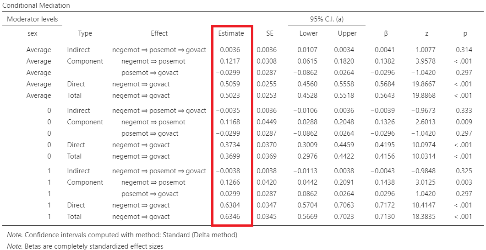

9 Mediation and Path Analysis
9.1 Mediation analysis
A single mediation analysis is based on the estimation of the four pathways, w, a, b, and c shown in Figure 9.1. In Figure 9.1 A, the “w” path represents the total X→Y effect. In Figure 9.1 B, the “a” path represents the X→M effect, the “b” path represents the M→Y effect, and the “c” path represents the direct X→Y effect. In traditional mediation analysis, the paths coefficients are estimated using linear regression equations.
Mediation analysis is based on the assumption of temporal precedence of the independent variable X, mediator, and outcome, which means that changes in the X are assumed to precede changes in the mediator, and that changes in the mediator are assumed to precede changes in the outcome.
It is important to note that, like any regression-based analysis, mediation analysis cannot establish causal associations unless it is grounded in an experimental design. Drawing causal inferences requires rigorous methodological controls, including random assignment, temporal precedence, and the elimination of alternative explanations.
Direct and indirect effects
Mediation analysis decomposes the total X→Y effect (w) into a direct effect (c) and an indirect effect through a mediator variable, which is the product of a and b (axb).
9.2 Example
Assume that previous research has demonstrated that higher grades are associated with increased happiness: X (grades) → Y (happiness) (Figure 9.2 A). In our theory, we also hypothesize that good grades enhance self-esteem, which in turn increases happiness: X (grades) → M (self-esteem) → Y (happiness) (Figure 9.1 B).
Importing data
Open the dataset named “happiness” from the file tab in the menu (Figure 9.3).
9.2.1 Baron & Kenny method
The following shows the basic steps for mediation analysis suggested by Baron & Kenny (1986) (Baron and Kenny 1986). A mediation analysis is comprised of three sets of regression: (1) X → Y, (2) X → M, and (3) X + M → Y. This 3-step method used to describe a mediation effect. Steps 1 and 2 use basic linear regression while steps 3 use multiple regression.
- Step 1: Estimate the association between X on Y (grades on happiness). The total effect “w” must be significantly different from 0. If there is no association between X and Y, there is nothing to mediate.
\[Y = intercept \ + \text{w} \cdot X + e\]
where \(e\) is the residual error of the model (i.e. ).
\[happiness = 2.86 \ + 0.40 \cdot grades\] Therefore, the total effect w = 0.40 is statistical significant (p<0.001).
(NOTE: Even if we don’t find a significant association between X and Y, we could move forward to the next step if we have a good theoretical background about their association.)
- Step 2: Estimate the association between X on M (grades on self-esteem). Path “a” must be significantly different from 0; The independent variable and the mediator must be associated. If X and M have no association, M is just a third variable that may or may not be associated with Y. A mediation makes sense only if X affects M.
\[M = intercept \ + \text{a} \cdot X + e\]
where \(e\) is the residual error of the model.
\[selfesteem = 1.50 \ + 0.56 \cdot grades\] Therefore, the effect of X on M (a = 0.56) is statistical significant (p<0.001).
- Step 3: Estimate the effects of both X and M on Y. Path “b” must be significantly different from 0; mediator and outcome must be associated. Additionally, the path “c” should be non-significant and nearly 0. The effect of X on Y will disappear (or at least weaken) when M is included in the regression. The effect of X on Y goes through M.
\[Y = intercept \ + c \cdot X + \text{b} \cdot M + e\]
where \(e\) is the residual error of the model.
\[happiness = 1.90 \ + 0.04 \cdot grades + 0.64 \cdot selfesteem\]
Therefore, the effect of M (self-esteem) on Y (happiness), controlling for X (grades), is statistically significant (b = 0.64, p < 0.001), whereas the effect of X (grades) on Y (happiness), controlling for M (self-esteem), is weakened and not statistically significant (c = 0.04, p = 0.719).
Total, direct and indirect effects
The total effect (w = 0.40) is just the coefficient (w) we would find by fitting a simple regression model (e.g., \(Y = intercept \ + \text{w} \cdot X\)).
The indirect effect is the effect of X on Y, through the mediator M. It’s obtained by multiplying \(a \times b = 0.56 \times 0.64 = 0.36\).
The direct effect (c = 0.04) is the partial effect of of X on Y after controlling for M.
In practice, a simple mediation model decompose the total effect of X on Y, in a direct and indirect effect. Therefore:
\[w = c + (a \times b) = 0.04 + (0.56 \times 0.64) = 0.04 + 0.36 = 0.40\]
9.2.2 Mediation Using Jamovi
On the Jamovi top menu navigate to
flowchart LR A(Analyses) -.-> B(medmod) -.-> C(Mediation)
as shown below in Figure 9.7.
The Mediation dialog box opens. From the left-hand pane drag the variable happiness into the Dependent Variable field, the variable selfesteem into the Mediator field, and the grades variable into the Predictor field as shown below (Figure 9.8).
Additionally, check Labels, Test Statistics, Confidence interval, Percent mediation, Path Estimates, and Estimate plot.
First, Figure 9.9 presents the path estimates (regression coefficients):
- a=0.56 (p <0.001)
- b=0.64 (<0.001)
- c = 0.04 (p = 0.714).
Second, Figure 9.10 presents the mediation estimates:
- The indirect effect (\(a \times b = 0.36\); p <0.001).
- The direct effect (c = 0.04; p = 0.714)
- The total effect (w = c + axb = 0.40; p<0.001)
We can also represent the mediation estimates in a plot:
9.3 Conditional mediation model
Mediation analysis is intended to understand the mechanisms through which impacts. It is characterized by direct and indirect effects.
Moderation analysis consists in understanding the conditions which alter the association between X and Y. It is characterized by conditional effect.
Conditional process analysis is used to understand the conditions that affect the mechanisms by which a variable transmits its effect on another. It is characterized by conditional direct and indirect effect.
It is also called “moderated mediation”. Due to the complexity of human and social processes, conditional mediation models may generally be more appropriate than mediation and moderation models only.
Once we are familiar with mediation and moderation models, the intuition behind conditional process models is straightforward. When one of the paths of a mediation model is moderated, the corresponding direct or indirect effect becomes a conditional effect \(\theta\).
9.3.1 Importing data
Open the dataset named “glbwarm” from the file tab in the menu (Figure 9.13).
The dataset contains the following variables:
govact: the extent to which the participant supports various policies or actions by the U.S. government to mitigate the threat of global climate change (e.g., how much the participant supports increasing government investment for developing alternative energy like biofuels, wind, or solar).negemot: how frequently the participant reported feeling concerned, worried, and alarmed when thinking about climate change.posemot: how frequently reported feeling “hopeful,” “encouraged,” and “optimistic” about global climate change.sex: 0 = female, 1 = male.
9.3.2 Regression equations for the model
Our model is specified by two regression equations, one for M and one for Y.
- Regression equation for M:
\[M = intercept \ + a_1 \cdot X + a_2 \cdot Z + a_3 \cdot XZ\]
which is equivalent to
\[M = intercept \ + (a_1 + a_3Z) \cdot X + a_2 \cdot Z\]
where \(θ_{X\rightarrow M}=a_1 + a_3Z\) is the conditional effect of X on M.

For females (Z=0): \(θ_{X\rightarrow M}=0.117\).
For males (Z=1): \(θ_{X\rightarrow M}=0.117 + 0.010 = 0.127\).
- Regression equation for Y
\[Y = intercept \ + c_1 \cdot X + c_2 \cdot Z + c_3 \cdot XZ + b \cdot M\]
which is equivalent to
\[Y = intercept \ + (c_1 + c_3Z) \cdot X + c_2 \cdot Z + b \cdot M\]
where \(θ_{X\rightarrow Y}=c_1 + c_3Z\) is the conditional direct effect of X on Y.
Therefore, the conditional direct effects of X on Y are:
For females (Z=0): \(θ_{X\rightarrow Y} = 0.373\).
For males (Z=1): \(θ_{X\rightarrow Y} = 0.373 + 0.265 = 0.638\).
9.3.3 The conditional indirect effects
The conditional indirect effect of X on Y through M is the product of the conditional effect of X on M and the effect \(b\) of M on Y:
For females (Z=0): \(θ_{X\rightarrow M} \times b = 0.117 \times (-0.03) = -0.0035\).
For males (Z=1): \(θ_{X\rightarrow M} \times b = 0.127 \times (-0.03) = -0.0038\).
9.3.4 Total effects
Therefore, the total effect is the sum of conditional direct and indirect effects: 0.373 + (- 0.0035) = 0.367.

Therefore, the total effect is the sum of conditional direct and indirect effects: 0.638 + (- 0.0038) = 0.634.
9.3.5 Conditional mediation using Jamovi
This analysis can be achieved in Jamovi as follows:
On the top menu navigate to
flowchart LR A(Analyses) -.-> B(medmod) -.-> C(GLM Mediation Analysis)
as shown below in Figure 9.7.

9.4 Path analysis
9.4.1 Basic concepts
Path analysis can be used to test more complex theories of observed variables. In this example, we look at the theory of planned behavior (TPB). This theory is a psychological theory that links beliefs to behavior. In its simplified form, the TPB proposes that an individual’s intention to perform a specific behavior influences the individual’s decision to enact that behavior, and attitude toward the behavior, perception of norms pertaining to that behavior, and perception of control over performing that behavior influence the individual’s intention to perform the behavior.
We can specify the Theory of Planned Behavior as a path diagram by drawing the observed variables and the directional associations (paths) between the variables as implied by the theory, where rectangles represent the variables and directional arrows represent the directional relations between variables, which is depicted in the path diagram below:
Exogenous variables: Independent variables that are influenced by factors outside the model and, in turn, influence endogenous variables. In path diagrams, arrows originate from exogenous variables but do not point to them.
Endogenous variables: Dependent variables that are explained by exogenous variables in the model. Arrows point toward them and these represent causal paths. Note that an endogenous variable may also be specified as the predictor of another endogenous variable, as is the case in our example path diagram.
Variances are typically represented as curved double-sided arrows, where both arrows point to the same variable. Covariances are also represented as double-sided arrows in which the arrows connect two distinct variables.
(Residual) error terms (which are sometimes called disturbances) are added to endogenous variables.
The equations of this model are:
\[intention = intercept + \beta_1 attitude + \beta_2 norms + \beta control + e\]
and
\[behavior = intercept + \beta_4 intention + e\]
9.4.2 Importing data
Open the dataset named “PlannedBehavior” from the file tab in the menu (Figure 9.25).
9.4.3 Path Analysis using Jamovi
This analysis can be achieved in Jamovi as follows:
On the top menu navigate to
flowchart LR A(Analyses) -.-> B(SEM) -.-> C(Path Analysis)
as shown below in Figure 9.7.
The Path Analysis dialog box opens. From the left-hand pane drag the variables behavior and intention into the Endogenous Variable field, and the variables attitude, norms into the Mediator field, and the grades variable into the Predictor field as shown below (Figure 9.8).
Next we specify the variables of each endogenous variable. First we select on the right panel the endogenous model that needs to be set, then select the variable(s) and fill the Models for Endogenous Vars field clicking the arrow.
Under the “Parameter Options”, also check the Indirect Effects.
The direct effects (path coefficients) are obtained from regression analysis.
The table in Figure 9.28 summarizes hypotheses testing results of the study.
The path coefficient (i.e., regression coefficient b) between attitude and intention is statistically significant and positive (b = 0.352, p < 0.001). The path coefficient between norms and intention is statistically significant and positive (b = 0.153, p = 0.010). The path coefficient between control and intention is statistically significant and positive (b = 0.275, p < 0.001). Finally, the path coefficient between intention and behavior is statistically significant and positive (b = 0.453, p < 0.001).
The intercepts of the equations of the model are following:
According the outputs of Figure 9.28 and Figure 9.29, the equations can be expressed as follows:
\[intention = 0.586 + 0.352 \cdot attitude + 0.153 \cdot norms + 0.275 \cdot control\]
and
\[behavior = 1.743 + 0.453 \cdot intention\]
Under the “R-Squared” table, we see the unadjusted R2 value for the outcome variable intention, which is equal to 0.369; that is, collectively, attitude, norms, and control explain 36.9% of the variance in intention. Additionally, intention explains 19.8% of the variance in behavior (Figure 9.30).
Moreover, the indirect effects are reported in the following table:
For example, the estimate for the indirect effect of the path attitude=>intention=>behavior is calculated as 0.35*0.45 = 0.16.
Using path analysis, we can also explicitly model the variance of the exogenous variables (e.g., attitude-attitude variance=0.93), the covariances (correlations) between the exogenous variables (e.g., norms-attitude covariance= 0.20), and the residual errors of the endogenous variables in the model (e.g., intention res. error = 0.53).
We can also present the model with a path diagram. All options regard aestetics of the diagram are shown in Figure 9.33.